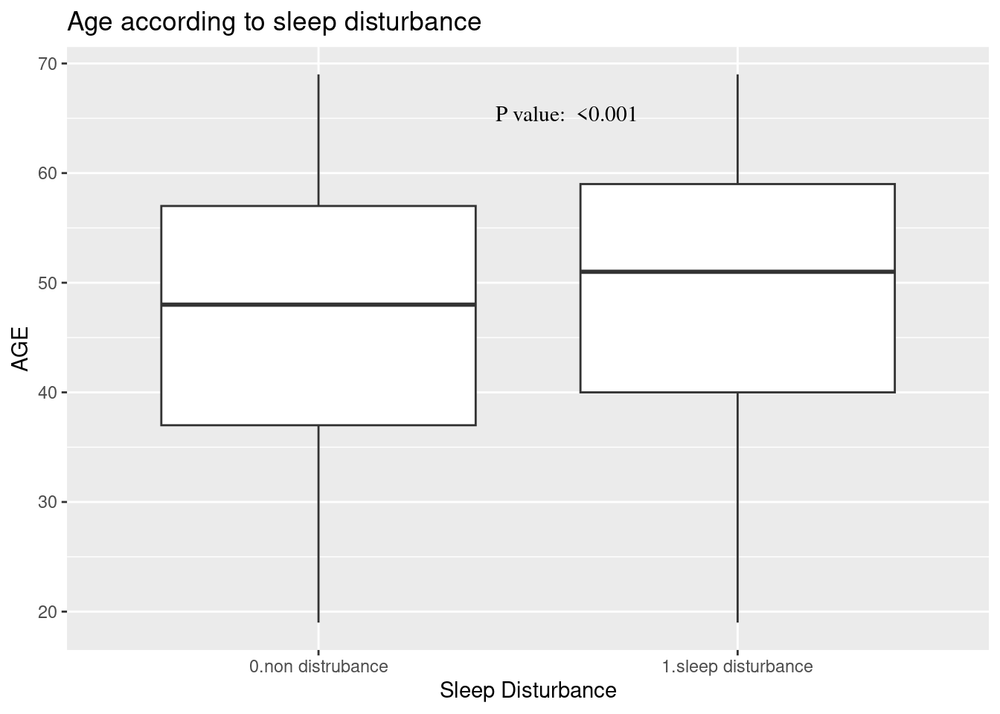

rm(list=ls())
#basic requirment
if(!require("tidyverse")) install.packages("tidyverse")
if(!require("htmlTable")) install.packages("htmlTable")
if(!require("broom")) install.packages("broom")
if(!require("labelled")) install.packages("labelled")
# packages from github
if(!require("devtools")) install.packages("devtools")
library(devtools)
if(!require("tabf")) install_github("jinhaslab/tabf", quiet = TRUE)
library(tabf)12 T검정, 로지스틱 회귀분석 플랏
12.1 install package from github
tidyvere and htmlTable, and broom 가 데이터를 변환하고 표시하는데 자주 사용됩니다. devtools 은 “github”에 있는 함수를 불러오는데 사용됩니다.
install_github 을 통해 패키지를 설치하겠습니다.
12.2 데이터 준비
12.2.1 근로환경조사 기본 변수 생성 (선택)
data manipulation에서 실습한 내용을 통해 변수를 실습을 위한 변수를 생성한 데이터인 kwcsData1.rds 를 이용하겠습니다. 이에 대한 자세한 과정은 이전 챔터에 있습니다.
Table 1 변수 생성과정 챕터
url <- "https://raw.githubusercontent.com/jinhaslab/opendata/main/kwcs/kwcsData1.rds"
download.file(url, "data/kwcsData1.rds")
dat1 = readRDS("data/kwcsData1.rds")12.3 Overview of data and Table 1
Variables can be divided into dependent and independent variables, and independent variables can be further categorized based on their nature into continuous or nominal variables. Let’s distinguish them as such.
stratas = c("sleepgp")
catVars = c("wwa1gp", "shortReturn","shiftWork" , "njob", "sexgp", "edugp", "empgp")
conVars = c("AGE","satisfaction")tab1 = tabf(dat1=dat1, stratas = stratas, catVars = catVars, conVars = conVars)
tab1# A tibble: 22 × 5
variables values `0.non distrubance` `1.sleep disturbance` p.value
<chr> <chr> <chr> <chr> <chr>
1 "AGE" "" 46.8±12.4 49.7±11.9 "<0.00…
2 "wwa1gp" "Never" 12222 (94.7%) 684 (5.3%) "<0.00…
3 "" "Rarely" 12316 (94.5%) 714 (5.5%) ""
4 "" "Sometimes" 9112 (90.3%) 981 (9.7%) ""
5 "" "Often" 3456 (82.8%) 717 (17.2%) ""
6 "" "Always" 634 (70.0%) 272 (30.0%) ""
7 "satisfaction" "" 2.1±0.5 2.4±0.6 "<0.00…
8 "shortReturn" "non short … 36183 (92.5%) 2927 (7.5%) "<0.00…
9 "" "short retu… 1557 (77.9%) 441 (22.1%) ""
10 "shiftWork" "non shift … 35056 (91.9%) 3073 (8.1%) "<0.00…
# ℹ 12 more rowstab1 %>%
setNames(c("", "", "None", "Disturbance", "P value")) %>%
htmlTable(
cgroup = c("", "Sleep disturbance", ""),
n.cgroup = c(2, 2, 1),
tfoot = "P value calculated by Chisq-Test and T-Test",
rnames = FALSE,
caption = "Basic Characteristics according to Sleep disturbance",
css.table = "font-family: 'Times New Roman';"
) | Basic Characteristics according to Sleep disturbance | ||||||
|---|---|---|---|---|---|---|
| Sleep disturbance | ||||||
| None | Disturbance | P value | ||||
| AGE | 46.8±12.4 | 49.7±11.9 | <0.001 | |||
| wwa1gp | Never | 12222 (94.7%) | 684 (5.3%) | <0.001 | ||
| Rarely | 12316 (94.5%) | 714 (5.5%) | ||||
| Sometimes | 9112 (90.3%) | 981 (9.7%) | ||||
| Often | 3456 (82.8%) | 717 (17.2%) | ||||
| Always | 634 (70.0%) | 272 (30.0%) | ||||
| satisfaction | 2.1±0.5 | 2.4±0.6 | <0.001 | |||
| shortReturn | non short return | 36183 (92.5%) | 2927 (7.5%) | <0.001 | ||
| short return | 1557 (77.9%) | 441 (22.1%) | ||||
| shiftWork | non shift work | 35056 (91.9%) | 3073 (8.1%) | <0.001 | ||
| shift work | 2684 (90.1%) | 295 (9.9%) | ||||
| njob | one-job | 37471 (91.9%) | 3317 (8.1%) | <0.001 | ||
| njob | 269 (84.1%) | 51 (15.9%) | ||||
| sexgp | Men | 17892 (93.1%) | 1327 (6.9%) | <0.001 | ||
| Women | 19848 (90.7%) | 2041 (9.3%) | ||||
| edugp | university or more | 19597 (92.9%) | 1502 (7.1%) | <0.001 | ||
| high school | 14943 (91.9%) | 1318 (8.1%) | ||||
| middle school or below | 3200 (85.4%) | 548 (14.6%) | ||||
| empgp | paid-worker | 25786 (92.4%) | 2122 (7.6%) | <0.001 | ||
| employer/self-employer | 2539 (91.7%) | 229 (8.3%) | ||||
| own-account worker | 8359 (90.5%) | 880 (9.5%) | ||||
| unpaind family work | 1056 (88.5%) | 137 (11.5%) | ||||
| P value calculated by Chisq-Test and T-Test | ||||||
T-test
The mean level of age are differ according to sleep disturbance. Box plot show mean and distribution of values. There are two method of t.test in R. One is using two vector, and the other is using of relationship.
#stratas = "sleepgp"
age1 = dat1$AGE[dat1$sleepgp =="0.non distrubance"]
age2 = dat1$AGE[dat1$sleepgp =="1.sleep disturbance"]
t.test(age1, age2)
Welch Two Sample t-test
data: age1 and age2
t = -13.409, df = 4040.8, p-value < 2.2e-16
alternative hypothesis: true difference in means is not equal to 0
95 percent confidence interval:
-3.306275 -2.462776
sample estimates:
mean of x mean of y
46.77878 49.66330 t.test(dat1$AGE ~ dat1$sleepgp)
Welch Two Sample t-test
data: dat1$AGE by dat1$sleepgp
t = -13.409, df = 4040.8, p-value < 2.2e-16
alternative hypothesis: true difference in means between group 0.non distrubance and group 1.sleep disturbance is not equal to 0
95 percent confidence interval:
-3.306275 -2.462776
sample estimates:
mean in group 0.non distrubance mean in group 1.sleep disturbance
46.77878 49.66330 T test’s p-value can be generated by following pipe code.
ttestPvalue <- dat1 %>%
select(sleepgp, AGE) %>%
pivot_longer(-sleepgp) %>%
nest(dat=-name) %>%
mutate(fit =map(dat, ~t.test(.$value ~ .$sleepgp)),
tidied =map(fit, tidy)) %>%
unnest(tidied) %>%
select(name, p.value) %>%
mutate(pvalue = ifelse(p.value < 0.001, "<0.001", sprintf("%.3f", p.value))) %>%
pull(pvalue)
# 위에는 여러개의 p value를 구할때 사용하는 것이고 하나만 사용할 때는
myttest <- t.test(dat1$AGE ~ dat1$sexgp)
myttest$p.value #를 사용한다. [1] 3.287249e-28dat1 %>%
select(sleepgp, AGE) %>%
ggplot(aes(x=sleepgp, y= AGE)) +
geom_boxplot() dat1 %>%
select(sleepgp, AGE) %>%
ggplot(aes(x=sleepgp, y= AGE)) +
geom_boxplot() +
ggtitle("Age according to sleep disturbance")+
xlab("Sleep Disturbance") +
theme(text=element_text(family="Times"))dat1 %>%
select(sleepgp, AGE) %>%
ggplot(aes(x=sleepgp, y= AGE)) +
geom_boxplot() +
ggtitle("Age according to sleep disturbance")+
xlab("Sleep Disturbance") +
annotate(
geom ="text", -Inf, Inf,
hjust=-3, vjust=5,
label =sprintf("P value: %s", ttestPvalue),
family = "Times"
) #+
#theme(text=element_text(family="Times")) Chisq Test
wwa1gp is “A. kept worrying about work when you were not working”, and the response is 0.Never, 1.Rarely, 2.Sometimes, 3.Often and 4.Always. In the previous table, the distribution of sleep distrubance are differ according to wwa1gp.
The bar chart is one of the best option for distribution visualization.
dat1 %>%
group_by(wwa1gp) %>%
count(sleepgp) %>%
mutate(prob = n/sum(n)*100,
prob = round(prob, 1)) %>%
filter(sleepgp =="1.sleep disturbance") %>%
ggplot(aes(x=wwa1gp, y = prob)) +
geom_bar(stat="identity")Some modification are needed to communicat to other researcher. Percent scale are easy to follow.
dat1 %>%
group_by(wwa1gp) %>%
count(sleepgp) %>%
mutate(prob = n/sum(n)*100,
prob = round(prob, 1)) %>%
filter(sleepgp =="1.sleep disturbance") %>%
ggplot(aes(x=wwa1gp, y = prob)) +
#theme(text=element_text(family="Times New Roman", face="bold", size=12)) +
xlab("kept worrying about work when you were not working") +
ylab("Sleep Disturbance (proportion)") +
ylim(0, 0.35)+
geom_bar(stat="identity") +
geom_text(aes(label = sprintf("%s%%", prob)), vjust = -0.5) +
scale_y_continuous(labels = function(x) sprintf("%s%%", round(x)))Now, we added the p value of chisq.test().
chisqp = dat1 %>%
select(wwa1gp, sleepgp) %>%
table() %>%
chisq.test()
if (chisqp$p.value <0.001){
pChisqV = "<0.001"
} else{
pChisqV = chisqp$p.value %>% sprintf("%.3f", .)
}
pChisqV[1] "<0.001"#library(extrafont)
library(ggthemes)
dat1 %>%
group_by(wwa1gp) %>%
count(sleepgp) %>%
mutate(prob = n/sum(n)*100,
prob = round(prob, 1)) %>%
filter(sleepgp =="1.sleep disturbance") %>%
ggplot(aes(x=wwa1gp, y = prob)) +
xlab("kept worrying about work when you were not working") +
ylab("Sleep Disturbance (proportion)") +
geom_bar(stat="identity") +
geom_text(aes(label = sprintf("%s%%", prob)), vjust = -0.5) +
scale_y_continuous(labels = function(x) sprintf("%s%%", round(x))) +
annotate(
geom ="text", -Inf, Inf,
hjust=-0.5, vjust=8,
label =sprintf("P value: %s", pChisqV),
#family = "Times New Roman",
fontface = "bold"
) +
theme_minimal() #+ #theme(text=element_text(family="Times New Roman", face="bold", size=12)) 12.4 Odds ratio and 95% confidence interval
Logistic regression model
There are 3 kind of models, model II and III are include more confounding variables compare to model I.
mod1 = dat1 %>%
glm(data=.,family="binomial",formula = sleepgp == "1.sleep disturbance"
~ wwa1gp)
mod2 = dat1 %>%
glm(data=.,family="binomial",formula = sleepgp == "1.sleep disturbance"
~ wwa1gp + AGE + sexgp +satisfaction)
mod3 = dat1 %>%
glm(data=.,family="binomial",formula = sleepgp == "1.sleep disturbance"
~ wwa1gp + AGE + sexgp +satisfaction + shiftWork + njob)oddf0() function gives us odds ratio, lower limt and upper limit (95% confidence interval). We can draw OR (95% CI) plot, using errobar() function. we can also change the color using RGB triplet (ref: http://www.cookbook-r.com/Graphs/Colors_(ggplot2)).
oddf0(mod1) %>%
ggplot(aes(y=values, x = or)) +
theme_classic() +
geom_errorbarh(aes(xmin = ll, xmax = ul), height = 0.09, color = "#666666", size=0.5) +
geom_point(shape = 15, size = 2, color = "#444444") +
geom_vline(xintercept = 1, color = "#FF0000", linetype = "dashed", cex =0.5, alpha = 0.5) +
ylab("kept worrying about work when you were not working") +
xlab("Odds Ratio and 95% Confidence Interval of Sleep Dsturbance") #+ #theme(text = element_text(family ="Times"))Vertical error bar also suitable to plot the OR (95% CI).
oddf0(mod1) %>%
ggplot(aes(x=values, y = or)) +
theme_classic() +
geom_errorbar(aes(ymin = ll, ymax = ul), width = 0.07, color = "#666666", size=0.5) +
geom_point(shape = 15, size = 2.5, color = "#444444") +
geom_hline(yintercept = 1, color = "#FF0000", linetype = "dashed", cex =0.5, alpha = 0.5) +
xlab("Kept worrying about work when you were not working") +
ylab("Odds Ratio and 95% Confidence Interval of Sleep Dsturbance")# + #theme(text = element_text(family ="Times"))